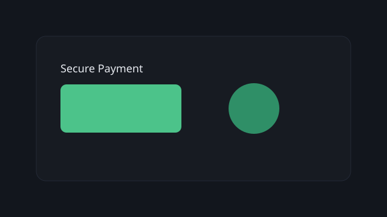
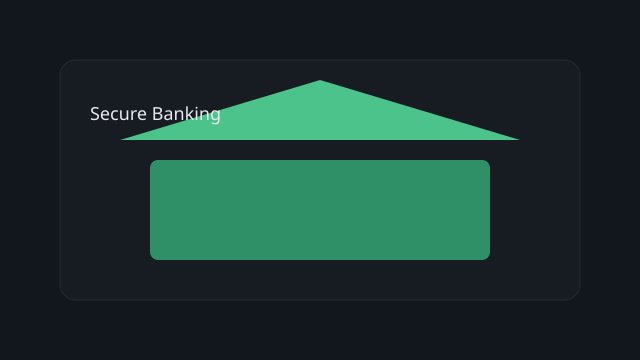
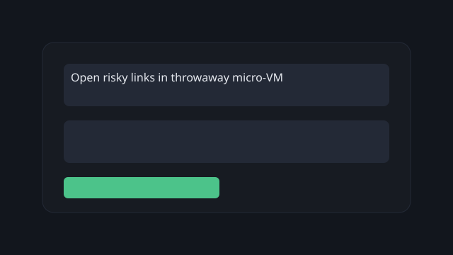

Personal
Keep sensitive tasks isolated from your everyday browsing and apps.

Secure Online Payment
Launch a dedicated, hardened micro-VM for checkout to isolate credentials, autofill data, and 2FA.

Secure Bank Management
Manage accounts in a separate GreenBox session—no extensions or background apps cross the boundary.

Safer Browsing
Open risky links in throwaway micro-VMs that vanish on close, keeping the host clean.